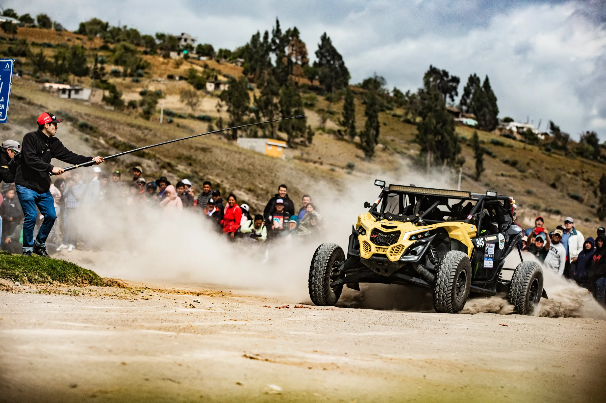
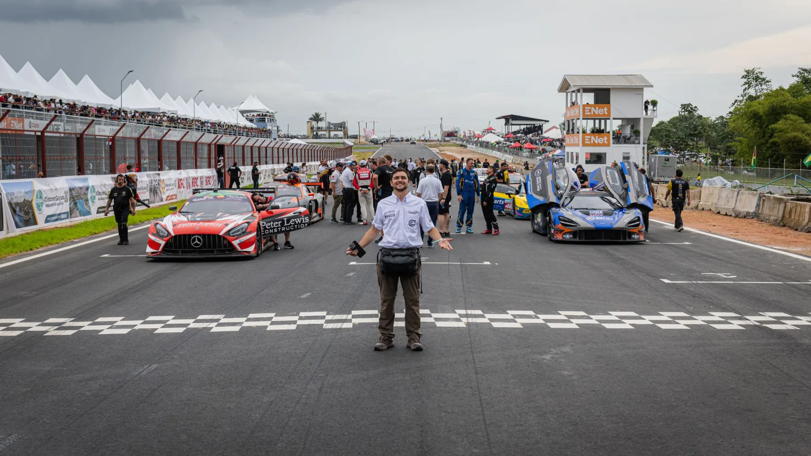
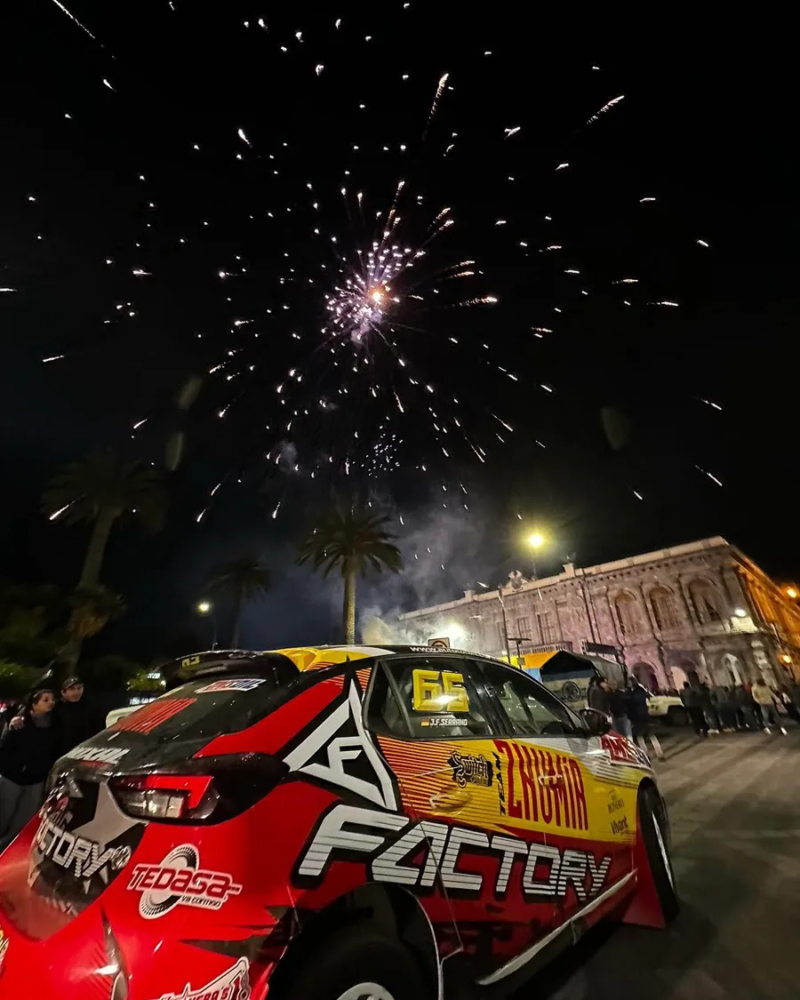
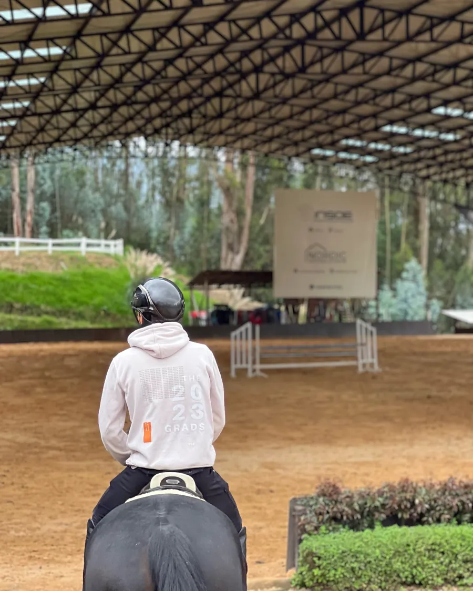
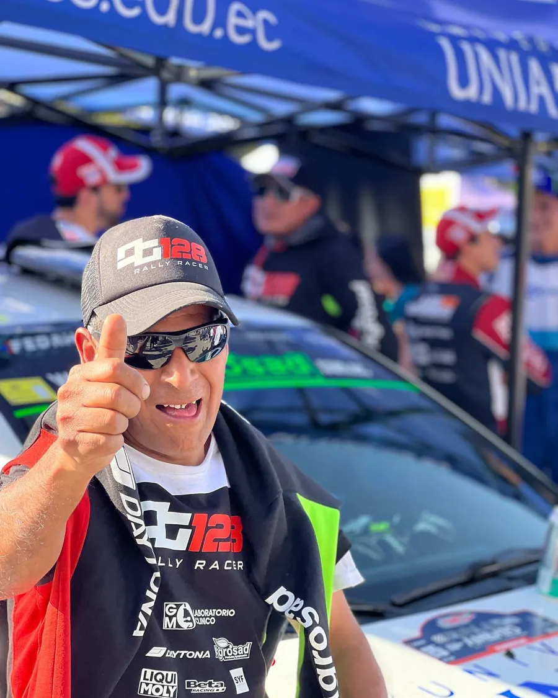
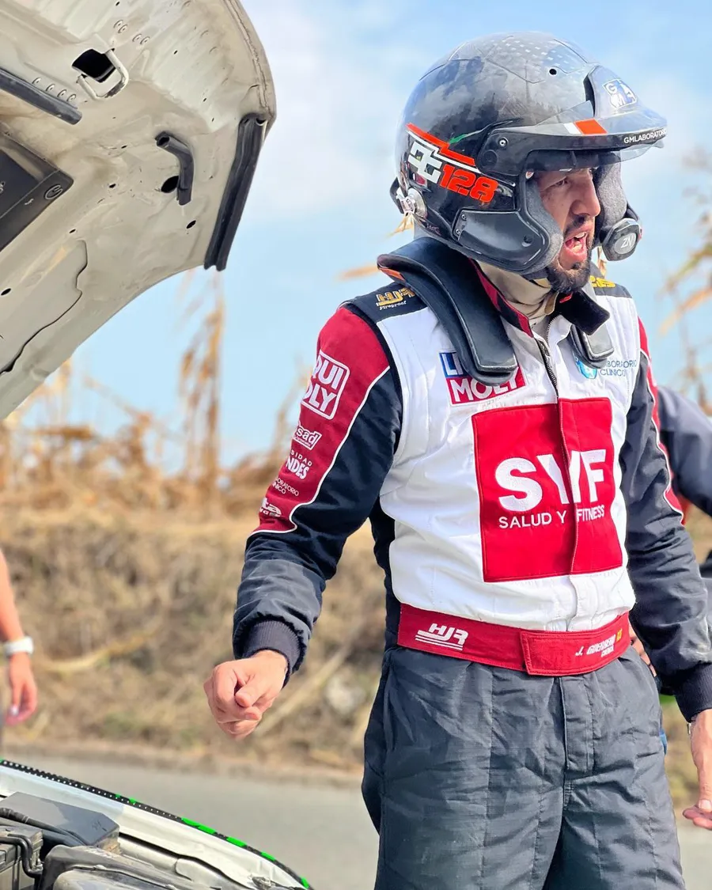
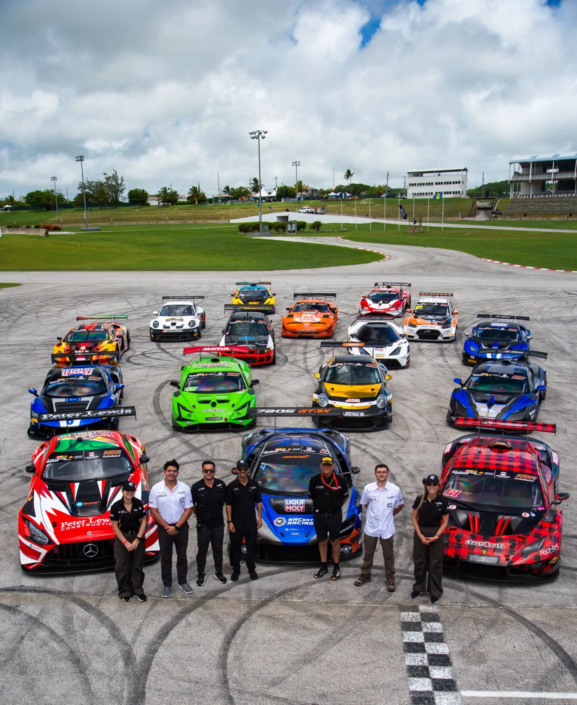
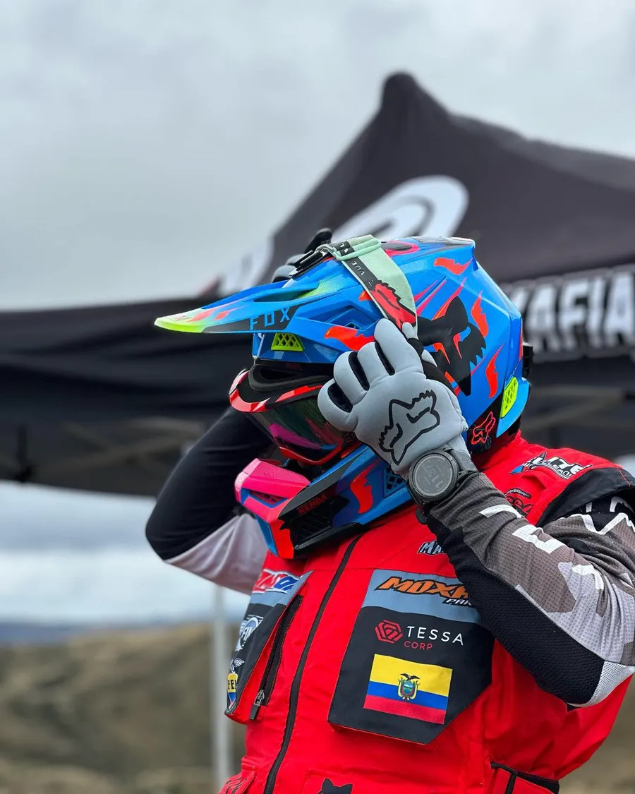
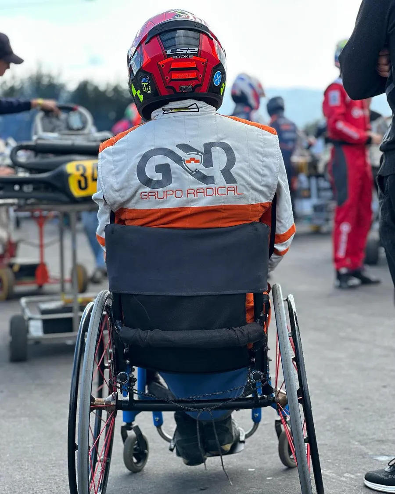
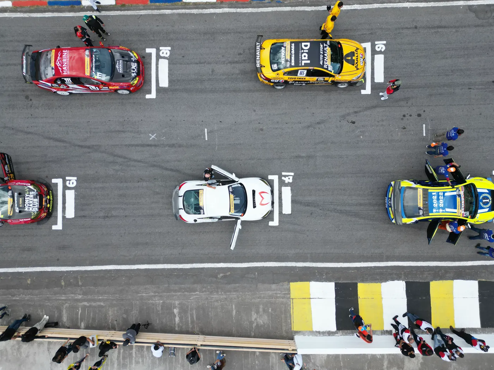

Identificamos el valor
Descubrimos aquello que hace diferente a cada deportista o proyecto: su historia, identidad, comunidad, capacidades y oportunidades de desarrollo.

Somos una iniciativa especializada en marketing y desarrollo comercial deportivo. Acompañamos a deportistas, eventos y proyectos deportivos a identificar, desarrollar y comunicar su valor, con estrategias que les permitan crecer profesionalmente y generar relaciones comerciales sostenibles.
Una carrera deportiva puede ser mucho más que una sucesión de competencias y resultados: puede convertirse en un proyecto profesional con identidad, propósito y valor para la sociedad y las marcas.

 Entreno, compito, gano…
Entreno, compito, gano…Durante años aprendió que su responsabilidad es entrenar, competir y conseguir resultados, esperando que las oportunidades lleguen solas.

Nuestra misión: construir el puente entre el potencial deportivo y las necesidades del mercado, con proyectos que generen valor para ambas partes.

 ¿Por qué debería
¿Por qué deberíaNecesita razones: conectar con audiencias, construir relaciones, comunicar valores, generar experiencias y alcanzar objetivos concretos.
Y el deporte tiene muchísimo que ofrecerles.
Capturamos la esencia del movimiento y las emociones que lo acompañan, para que más personas conecten con el verdadero espíritu del deporte.




Descubrimos aquello que hace diferente a cada deportista o proyecto: su historia, identidad, comunidad, capacidades y oportunidades de desarrollo.
Transformamos ese potencial en planes de comunicación, posicionamiento y propuestas comerciales con objetivos claros y posibilidades reales de ejecución.
Creamos contenidos, narrativas y experiencias que conectan auténticamente con las personas y fortalecen el valor de los proyectos deportivos.
Preparamos a nuestros aliados para presentar, negociar y desarrollar propuestas de colaboración que tengan sentido para el proyecto deportivo y para las empresas.

Para nosotros, el patrocinio no comienza cuando una empresa decide invertir. Comienza cuando un proyecto deportivo entiende qué puede aportar, a quién puede beneficiar y cómo puede generar valor.
Por eso nuestro trabajo va más allá de buscar auspiciantes: construimos proyectos mejor preparados para competir por oportunidades comerciales, desarrollar relaciones profesionales y sostener su crecimiento a largo plazo.
No prometemos contratos ni patrocinadores.
“Nos comprometemos con un proceso que te ayude a reconocer, fortalecer y aprovechar tu potencial.”
Queremos contribuir a una industria donde los deportistas tengan más herramientas para desarrollar sus carreras, los proyectos deportivos puedan sostenerse y las empresas encuentren razones auténticas para invertir en deporte.
Una industria donde el valor de un deportista no dependa solo de sus medallas, sus seguidores o los beneficios tributarios que pueda ofrecer.
Detrás de cada disciplina hay una oportunidad de generar impacto, construir comunidad e inspirar a nuevas generaciones. Ese valor merece desarrollarse profesionalmente.



Si eres deportista, organizas un evento o estás construyendo un proyecto deportivo, queremos conocer lo que estás haciendo y explorar cómo llevarlo más lejos.